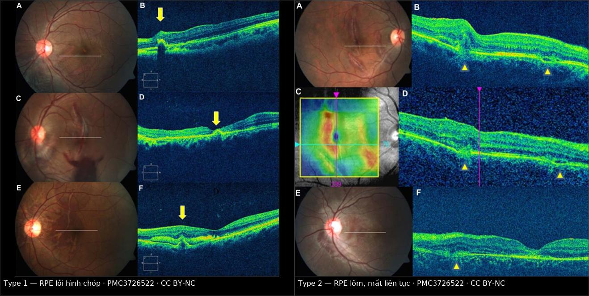
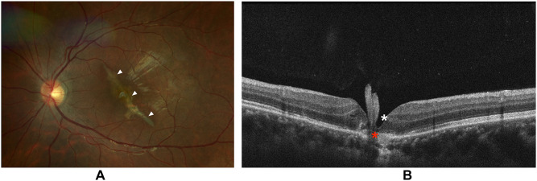
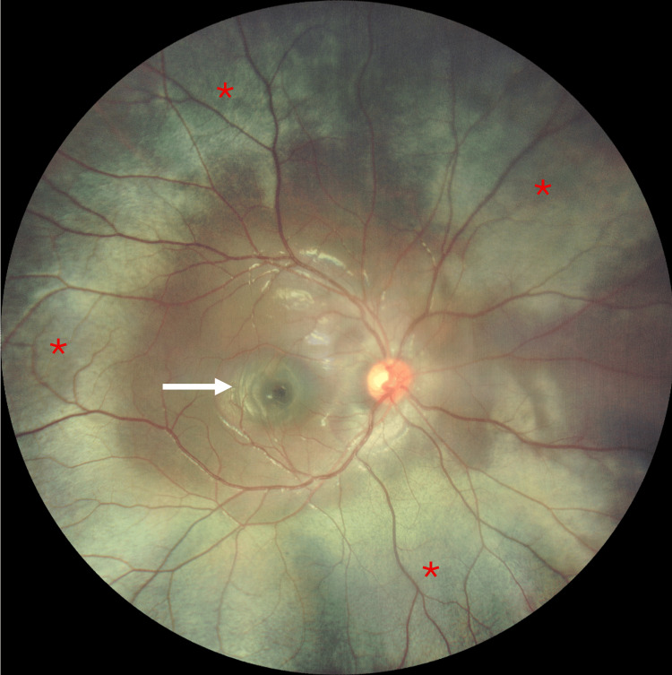
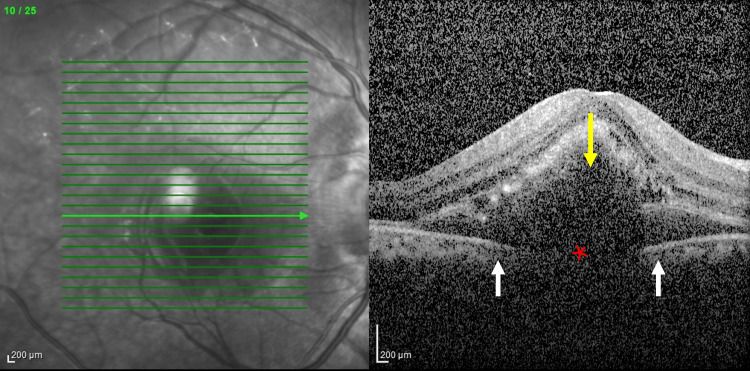
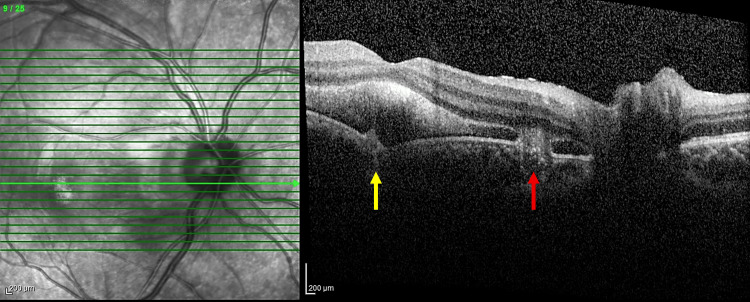
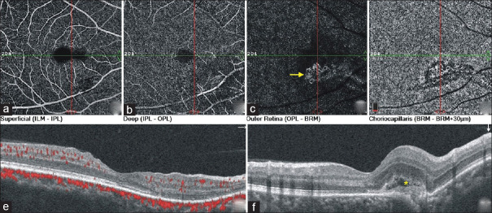

1505 — Rách hắc mạc do chấn thương: dải sáng hình cung quanh đĩa thị, xuất huyết dưới võng mạc và CNV muộn / Traumatic choroidal rupture
Tags: pattern:rach-hac-mac pattern:dai-sang-hinh-cung pattern:xuat-huyet-duoi-vong-mac pattern:mat-lien-tuc-RPE-Bruch vung:hac-mac vung:mat vung:hoang-diem vung:dia-thi vung:hau-cuc anatomy:mang-Bruch anatomy:ruong-mach-hac-mac protocol:OCT-hoang-diem protocol:FA-OCTA protocol:sieu-am-Bscan score:khong incidentaloma:khong
Mức chắc chắn (certainty): tổng hợp y văn (literature synthesis) — ghép bài tổng quan (Indian J Ophthalmol 2023 — PMC10417958, CC BY-NC-SA), loạt 18 mắt phân type trên SD-OCT (Clin Ophthalmol 2013 — PMC3726522, CC BY-NC), loạt 4 ca chụp SS-OCT mô tả sinh lý bệnh tại chỗ (Indian J Ophthalmol 2020 — PMC7728025), 33 mắt rách hắc mạc trong 853 ca chấn thương kín (Ther Adv Ophthalmol 2019 — PMC6537082, CC BY-NC), 54 ca với 11 CNV (BMC Ophthalmol 2019 — PMC6878647, CC BY 4.0), loạt ca tPA dưới võng mạc (Int Med Case Rep J 2026 — PMC13496125), ca trẻ 12 tuổi (Cureus 2026 — PMC13440916, CC BY 4.0), ca đa chấn thương (Open Access Emerg Med 2023 — PMC9983613), ca OCTA (Taiwan J Ophthalmol 2021 — PMC8493985), và 71 mắt sclopetaria (Am J Ophthalmol Case Rep 2019 — PMC6384308). Nhóm không có bệnh nhân của mình; chỗ suy luận ghi [suy luận].
Vị trí trong thư viện: 1501 phủ chấn thương dây thị (giảm thị lực + RAPD, CT/MRI); 449 phủ vỡ nhãn cầu & dị vật nội nhãn; 1479 phủ bong võng mạc thanh dịch; 1486 phủ khối hắc mạc trên siêu âm. Bài này trả lời mặt còn trống: nhãn cầu còn nguyên, không RAPD, nhưng đáy mắt có dải sáng hình cung — đó là gì, đọc trên OCT thế nào, và theo dõi bao lâu.
Câu chốt — năm con số phải thuộc: (1) 5–10% chấn thương mắt kín có rách hắc mạc, và ~80% là gián tiếp — hình cung đồng tâm đĩa thị (PMC10417958). (2) Trong 111 mắt, tổn thương ở hoàng điểm 68% (37% xuyên hoàng điểm, 31% ngoài hoàng điểm) (Ament, dẫn trong PMC10417958). (3) CNV 5–10% là con số kinh điển, nhưng các loạt hiện đại ghi 12% (4/33), 20% (11/54) và 16,6% (3/18) — 82% xuất hiện trong năm đầu, trung vị 230 ngày (PMC6537082, PMC6878647, PMC3726522). (4) SS-OCT: khe hở màng Bruch 103–465 µm, Sattler/Haller còn nguyên, máu tụ dưới võng mạc chứ không dưới RPE (PMC7728025). (5) Yếu tố dự báo CNV: rách gần hoàng điểm và dài — nhóm có CNV dài trung vị 4.504 vs 3.054 µm (p = 0,03) (Secretan, dẫn trong PMC6537082).
1. Tổng quan bệnh học – cơ chế hình ảnh (TẠI SAO)
1.1 Giải phẫu: năm lớp chồng nhau, một lớp "giòn" nhất
- Từ trong ra ngoài ở hậu cực: võng mạc thần kinh (dày ~250–300 µm quanh hoàng điểm) → biểu mô sắc tố võng mạc (RPE) → màng Bruch (Bruch membrane) → lớp mao mạch hắc mạc (choriocapillaris) → lớp Sattler rồi lớp Haller (mạch hắc mạc lớn) → củng mạc.
- Màng Bruch là màng đàn hồi 5 lớp, dày 2–4 µm, giàu elastin. Võng mạc đàn hồi tốt, củng mạc dày và đàn hồi, còn Bruch cứng và giòn nhất trong chuỗi này → khi nhãn cầu bị ép rồi bung ra, Bruch là nơi rách trước tiên (PMC10417958, PMC3726522).
- RPE và choriocapillaris đều nằm trên màng đáy là một phần của Bruch — nên Bruch rách thì RPE và mao mạch hắc mạc rách theo, đúng như mô tả SS-OCT: ổ rách RPE–Bruch, còn Sattler/Haller nguyên vẹn (PMC7728025).
1.2 Cơ chế: lực cắt tỏa tròn từ đĩa thị — vì sao "hình cung"
- Chấn thương kín ép nhãn cầu theo trục trước–sau → nhãn cầu phình ra ở xích đạo → mô bị kéo theo phương tiếp tuyến, và lực cắt (shear) lan tỏa đồng tâm từ dây thị ra sau. Vì vậy rách gián tiếp nằm sau xích đạo, đồng tâm đĩa thị, hình cung/vệt, hay gặp ở hoàng điểm – thái dương — nơi ứng suất lớn nhất và cũng là nơi thị lực bị đe dọa nhất (PMC10417958).
- Rách trực tiếp (coup) nằm ngay điểm va đập, thường trước xích đạo, song song với ora serrata — vị trí phản ánh điểm tác động, không phải hướng lực cắt.
- Màng Bruch giòn bệnh lý thì rách vì chấn thương rất nhẹ: pseudoxanthoma elasticum (PXE), và cả bệnh huyết sắc tố/tăng canxi [suy luận từ cơ chế elastin — PMC10417958 nêu PXE].
1.3 TẠI SAO máu nằm DƯỚI VÕNG MẠC mà không dưới RPE
- Mao mạch hắc mạc vỡ → máu thoát ra ngay dưới lớp tế bào cảm thụ sáng, bóc võng mạc thần kinh khỏi RPE → xuất huyết dưới võng mạc (subretinal hemorrhage), tạo mảng đỏ che mất chính đường rách trong 1–4 tuần đầu (PMC7728025 mô tả đúng đường đi này: "blood … dissected under the photoreceptor layer to lift it off the RPE").
- Khác với CNV của AMD (mạch mới mọc dưới RPE → xuất huyết dưới RPE, hình vòm): ở rách hắc mạc, lớp mao mạch bị rách cùng Bruch, nên máu vào khoang dưới võng mạc — đây là lý do đáy mắt thấy mảng đỏ phẳng, che bờ rách, và OCT thấy võng mạc bị đẩy lên hình vòm nhưng dải RPE–Bruch vẫn ở dưới (ảnh Ca 2).
- Xuất huyết tiêu đi để lại dải xơ trắng–vàng co kéo, có thể bộc lộ củng mạc; tế bào RPE tăng sinh ở bờ trong 3–4 tuần (mô bệnh học, dẫn trong PMC10417958).
1.4 TẠI SAO OCT là chuẩn — và đọc đúng hai kiểu
- Trên OCT, dải RPE–Bruch là đường tăng phản xạ mảnh; rách = mất liên tục đường này + đường viền hắc mạc lõm xuống hoặc lồi lên, kèm mất liên tục ellipsoid zone (EZ) và màng giới hạn ngoài (ELM).
- Phân type theo Nair (2013) — khác biệt không chỉ để mô tả mà để tiên lượng (PMC3726522):
- Type 1: RPE–choriocapillaris lồi ra trước thành hình chóp/dom, khe hở nhỏ hoặc RPE–choriocapillaris nâng lên kèm nhiều máu dưới võng mạc — "Bruch rách nhưng màng còn căng".
- Type 2: vùng mất liên tục rộng của RPE–choriocapillaris + EZ + ELM, bờ lõm xuống, mô trượt xuống theo ổ rách — "mất mô thật".
- Trong 18 mắt của Nair: 10 type 1, 8 type 2; CNV xuất hiện 1/10 type 1 và 2/8 type 2 — type 2 có xu hướng nặng hơn nhưng số quá nhỏ để chốt [suy luận] (PMC3726522).
- Khe hở Bruch đo được 103–465 µm trên SS-OCT — tức nhỏ hơn độ phân giải của mọi máy CT/MRI lâm sàng, nên không có "rách hắc mạc trên CT".
1.5 TẠI SAO tự phát huỳnh quang (AF) và FA lại "vẽ" được đường rách
- AF (fundus autofluorescence): vùng rách giảm huỳnh quang vì mất RPE (mất lipofuscin) và vì máu/RPE chắn; bờ rách tăng huỳnh quang do RPE tăng sinh ở mép — dấu hiệu xuất hiện sau 3–4 tuần và thấy rõ khi máu đã tan (PMC10417958).
- FA: thì sớm giảm huỳnh quang (máu chắn + mất mao mạch hắc mạc tại chỗ), thì muộn bắt màu nhẹ ở bờ xơ. Khi có CNV: mạng mạch tăng huỳnh quang lan rộng dần và rò (leakage) ở thì muộn — đúng hình thái "classic" mà loạt ca mô tả (PMC6537082, Hình 2).
- OCTA cho thấy mạng mạch nối (anastomotic network) ở lớp võng mạc ngoài và choriocapillaris, không có ở lớp nông/sâu của võng mạc — chốt CNV mà không cần tiêm thuốc (PMC8493985).
1.6 Vì sao CT/MRI hốc mắt "bình thường" không loại trừ
- CT lát ≤ 1 mm trả lời câu hỏi xương: gãy sàn/thành ổ mắt, máu xoang, dị vật. Võng mạc + hắc mạc dày < 1 mm → dưới ngưỡng phân giải, lại nằm sát xương nên nhiễu beam-hardening. MRI bị artifact chuyển động nhãn cầu và không phân giải được màng 2–4 µm. Chẩn đoán là lâm sàng + OCT; CT chỉ để loại trừ nguyên nhân khác và lập kế hoạch mổ xương (PMC9983613 — bệnh nhân đa chấn thương được mổ sàn ổ mắt trước khi ai soi đáy mắt).
1.7 Bảng hằng số phải nhớ
| Đại lượng | Giá trị | Nguồn |
|---|---|---|
| Rách hắc mạc trong chấn thương mắt kín | 5–10%; ~80% là gián tiếp | PMC10417958 |
| Vị trí (111 mắt) | hoàng điểm 68% (xuyên hoàng điểm 37%, ngoài 31%) | Ament, dẫn trong PMC10417958 |
| Khe hở màng Bruch trên SS-OCT | 103–465 µm | PMC7728025 |
| CNV sau rách hắc mạc | 5–10% kinh điển; 12% (4/33), 20% (11/54), 16,6% (3/18) | PMC10417958; PMC6537082; PMC6878647; PMC3726522 |
| Thời điểm CNV | 82% trong năm đầu; trung vị 230 ngày; loạt khác 5,7 tháng (2–12) | PMC6537082; PMC6878647 |
| Rách có CNV dài hơn | 4.504 vs 3.054 µm (p = 0,03) | Secretan, dẫn trong PMC6537082 |
| Ngưỡng "gần hoàng điểm" | < 1.500 µm từ vùng không mạch hoàng điểm | Secretan, dẫn trong PMC6537082 |
| Anti-VEGF cho CNV chấn thương | 4,2 mũi (1–8), 100% thoái triển; loạt khác 1,5 mũi (1–3) | PMC6878647; PMC6537082 |
| Sclopetaria (71 mắt) | nam 88,1%, tuổi trung vị 19,5; cải thiện 64,6%, 16,4% đạt 20/20 | PMC6384308 |
2. Mẫu hình + chẩn đoán phân biệt theo vị trí (gamut)
Mẫu hình: sau chấn thương mắt kín (bóng, vợt, nắm đấm, tay lái, chổi/đũa, tai nạn xe), bệnh nhân nhìn mờ một bên, nhãn cầu còn nguyên, không RAPD, đáy mắt có dải sáng vàng–trắng hình cung/vệt, thường đồng tâm đĩa thị, có thể bị mảng xuất huyết dưới võng mạc che. Câu hỏi hình ảnh gồm ba lớp:
- Có rách thật không — dải sáng đó là rách hắc mạc, commotio retinae, vết nứt cận thị, hay angioid streaks?
- Rách ở đâu và dài bao nhiêu — có xuyên hoàng điểm không? (quyết định tiên lượng thị lực và tần suất theo dõi)
- Đã có CNV chưa — dịch dưới võng mạc, xuất huyết mới, mạng mạch trên OCTA?
2.1 Gamut theo vị trí và hướng
- Hậu cực – hoàng điểm – thái dương đĩa thị (gián tiếp, ~80%): hình cung/vệt đồng tâm, 1–3 đường kính đĩa cách bờ đĩa; hay xuyên hoàng điểm; kèm xuất huyết dưới võng mạc; đây là nhóm CNV và mất thị lực trung tâm.
- Quanh đĩa thị (peripapillary): do cú đấm (punch) — vị trí sát bờ đĩa, có thể kèm tổn thương dây thị (nối 1501).
- Chu biên trước xích đạo (trực tiếp): song song ora serrata, tại điểm va đập; dễ kèm rách võng mạc/dialysis → bong võng mạc; khám 360° ấn củng mạc.
- Nhiều đường rách: 5/18 mắt trong loạt Nair; nhiều rách không đồng nghĩa tiên lượng xấu nếu không xuyên hoàng điểm (PMC3726522).
- Rách + vỡ nhãn cầu: khác hoàn toàn — xử trí cấp cứu theo 449, không ấn nhãn cầu, CT trước MRI nếu nghi dị vật kim loại.
2.2 Gamut "dải sáng/dải trắng ở đáy mắt" — bắt buộc loại trừ
- Commotio retinae (Berlin edema): trắng đục lan tỏa, bờ mờ, không có đường rách, tự tan 3–4 tuần; hay đi kèm rách hắc mạc (22% trong loạt 37 mắt — PMC6537082) nên thấy commotio không được dừng lại.
- Chorioretinitis sclopetaria: vỡ cả võng mạc và hắc mạc, mô xơ trắng co kéo bộc lộ củng mạc, do đạn/vật tốc độ cao đi sát nhãn cầu; 71 mắt trong y văn; theo dõi là chính, mổ chỉ khi bong võng mạc/xuất huyết dịch kính không tan (PMC6384308).
- Angioid streaks (PXE, bệnh huyết sắc tố): dải xám–nâu, hai bên, đối xứng, tỏa nan hoa quanh đĩa, không tiền sử chấn thương; dễ CNV và dễ rách do chấn thương rất nhẹ.
- Vết nứt hắc mạc ở cận thị nặng (lacquer cracks): dải ngắn, thẳng/gấp khúc, ở hậu cực mắt trục dài > 26,5 mm, nhiều vết, kèm teo hắc mạc.
- Sẹo hắc võng mạc cũ / vệt toxocara / dải myelin: bờ rõ, không thay đổi theo thời gian, không xuất huyết.
- Xuất huyết dưới võng mạc không do rách: Terson (sau xuất huyết dưới nhện), Valsalva, PCV/AMD, bệnh máu — hỏi bối cảnh, soi hai mắt, OCT tìm dải RPE–Bruch còn liên tục.
3. Bảng so sánh phân biệt (ma trận đối chiếu)
| Thực thể (entity) | Hình ảnh điển hình (AF/FA/OCT) | Chốt vào (rule-in) | Chốt loại (rule-out) | Gợi ý xác nhận |
|---|---|---|---|---|
| Rách hắc mạc gián tiếp (indirect CR) | Dải sáng hình cung/vệt, đồng tâm đĩa thị, cách đĩa 1–3 DD; AF: giảm huỳnh quang trong rách + viền tăng huỳnh quang sau 3–4 tuần; OCT: mất liên tục dải RPE–Bruch, bờ lõm (type 2) hoặc lồi hình chóp (type 1), mất EZ/ELM | Tiền sử chấn thương kín + hướng đồng tâm đĩa thị + OCT mất liên tục RPE–Bruch, Sattler/Haller còn nguyên | Dải hai bên đối xứng không chấn thương → angioid streaks; dải ngắn gấp khúc + mắt cận thị nặng → lacquer crack | SD-OCT raster/cube qua toàn bộ chiều dài + AF; đo chiều dài và khoảng cách tới tâm hoàng điểm |
| Rách hắc mạc trực tiếp (direct CR) | Ở đúng điểm va đập, trước xích đạo, song song ora serrata, thường đơn độc | Vị trí khớp điểm tác động + hướng song song ora | Vị trí sau cực, hình cung quanh đĩa → gián tiếp | Soi 360° ấn củng mạc; OCT vùng rìa |
| Chorioretinitis sclopetaria | Mất mô hắc võng mạc, mô xơ trắng co kéo, bộc lộ củng mạc, đường đạn; hay kèm bong võng mạc | Đường đạn/vật tốc độ cao + mất mô + co kéo | Rách mảnh, không mất mô, không đường đạn → rách hắc mạc đơn thuần | CT hốc mắt tìm dị vật; không thăm dò ổ rách; theo dõi (PMC6384308) |
| Commotio retinae | Trắng đục lan tỏa, bờ mờ; OCT: tăng phản xạ EZ/OPL, không mất liên tục RPE–Bruch; tan 3–4 tuần | Trắng mờ + tự tan + OCT không có khe RPE–Bruch | Có dải sáng sắc nét + khe RPE–Bruch → rách thật | OCT ngay và lặp sau 2–4 tuần |
| Angioid streaks (PXE) | Dải xám–nâu, hai bên, đối xứng, tỏa quanh đĩa; AF: dải giảm huỳnh quang; hay CNV | Hai bên + đối xứng + không chấn thương + bệnh da PXE | Một bên + đúng hướng lực + xuất huyết khu trú → rách chấn thương | Khám da – cổ – mạch, Hb điện di; AF/ICGA |
| Lacquer cracks (cận thị nặng) | Dải vàng nhạt, ngắn, thẳng/gấp khúc, hậu cực, nhiều vết, teo hắc mạc quanh | AL > 26,5 mm + nhiều vết + teo hắc mạc | Dải dài, hình cung, đơn độc, có chấn thương → rách | Đo trục nhãn cầu; OCT; AF |
| CNV sau rách hắc mạc | Dịch dưới võng mạc, xuất huyết mới, lipid tại bờ rách; FA rò thì muộn; OCTA mạng mạch ở võng mạc ngoài/choriocapillaris | Rách hắc mạc + thị lực giảm lại + dịch dưới võng mạc + OCTA có mạng mạch | Sẹo phẳng, không dịch, OCTA không mạng mạch → sẹo lành, không tiêm | OCTA (không cần thuốc) hoặc FA; anti-VEGF theo PRN (PMC6878647) |

Trái: Type 1 — RPE–choriocapillaris lồi ra trước thành hình chóp, khe hở nhỏ (mũi tên vàng). Phải: Type 2 — mất liên tục rộng RPE–choriocapillaris, bờ lõm xuống, mô trượt vào ổ rách (đầu tam giác vàng). Nguồn: Clin Ophthalmol 2013 (PMC3726522), CC BY-NC. Ảnh ghép letterbox, không crop.3.1 Đọc OCT theo trình tự cố định (tránh "thấy máu là dừng")
- Xác định dải RPE–Bruch — đây là "xương sống" của chẩn đoán; đứt ở đâu, đứt bao nhiêu µm.
- Nhìn bờ: lồi lên = type 1; lõm/mất mô = type 2.
- Nhìn lớp võng mạc ngoài: EZ và ELM còn hay mất; mất EZ tại chỗ dự báo thị lực không hồi phục dù máu tan.
- Nhìn khoang dưới võng mạc: máu (tăng phản xạ, có bóng) hay dịch trong (giảm phản xạ) — dịch trong ở bờ rách nhiều tháng sau = nghi CNV.
- Đo: chiều dài rách (mm) và khoảng cách ngắn nhất tới tâm hoàng điểm (µm) — hai con số này là yếu tố nguy cơ CNV đã được chứng minh.
3.2 Dấu hiệu trên từng modality
| Modality | Thấy gì | Không thấy gì |
|---|---|---|
| Soi đáy mắt giãn đồng tử | Dải sáng, mảng xuất huyết, commotio, vị trí tương quan đĩa thị | Độ sâu tổn thương, màng Bruch |
| SD-OCT / SS-OCT | Chuẩn: khe RPE–Bruch, type 1/2, EZ/ELM, dịch dưới võng mạc | Vùng bị máu dày che (tín hiệu bị chặn) |
| AF | Dải giảm huỳnh quang + viền tăng huỳnh quang; theo dõi tiến triển | Ở thì cấp khi máu còn nhiều |
| FA | Rò thì muộn của CNV, vùng mất mao mạch | Khe hở nhỏ < 100 µm |
| OCTA | Mạng mạch CNV không xâm lấn, theo dõi đáp ứng anti-VEGF | Máu/xuất huyết gây artifact |
| B-scan | Khi đục thể thủy tinh/dịch kính không soi được: mảng hồi âm dày dưới võng mạc, bong võng mạc kèm | Không phân giải màng Bruch |
| CT hốc mắt ≤ 1 mm | Gãy xương, máu xoang, dị vật | Không bao giờ thấy rách hắc mạc |

(A) Đáy mắt: vệt sáng chéo qua hoàng điểm (đầu mũi tên trắng). (B) OCT: mất liên tục dải RPE–Bruch (dấu hoa thị đỏ) và tổ chức thoát ra (dấu hoa thị trắng). Nguồn: Open Access Emerg Med 2023 (PMC9983613), CC BY-NC.4. Protocol chụp + theo dõi (không có RADS — có lịch)
4.1 Ai phải soi đáy mắt
- Mọi chấn thương đầu–mặt có gãy xương ổ mắt/hàm trên, đặc biệt đa chấn thương: khám mắt giãn đồng tử phải làm trước khi bệnh nhân ra viện, kể cả khi không có dấu thương tích bên ngoài — ca đa chấn thương trong PMC9983613 chỉ được phát hiện sau khi đã mổ sàn ổ mắt, thị lực 6/30, lác trong và hạn chế dạng.
- Trẻ em: không mô tả được cơ chế và triệu chứng → luôn soi đáy mắt giãn đồng tử khi có chấn thương kín (ca 12 tuổi bị đũa: 6/60).
4.2 Trình tự hình ảnh
- SD-OCT hoàng điểm + raster qua toàn bộ chiều dài rách (nếu máu dày: chụp vùng lân cận và lặp sau 1–2 tuần).
- AF cơ bản — dễ so sánh về sau, thấy rõ viền tăng huỳnh quang.
- FA nếu nghi CNV (thị lực giảm lại, dịch dưới võng mức trên OCT, xuất huyết mới) — không làm FA thường quy ở mọi ca.
- OCTA ở các lần theo dõi: không thuốc, phát hiện mạng mạch trước khi có dịch.
- B-scan khi không soi được hậu đoạn (đục thể thủy tinh, xuất huyết dịch kính) — nối 1498.
- CT hốc mắt ≤ 1 mm + MPR khi có chấn thương hàm mặt, nghi dị vật, hoặc cần mổ xương; MRI chỉ khi đã loại trừ dị vật kim loại.
4.3 Lịch theo dõi (dựa trên thời điểm CNV)
- 1 tuần, 1 tháng, 3 tháng, 6 tháng, 12 tháng, sau đó hằng năm — vì 82% CNV xuất hiện trong năm đầu, trung vị 230 ngày; nhưng CNV muộn sau nhiều năm vẫn có, nên dặn bệnh nhân tự kiểm Amsler và quay lại nếu nhìn méo/thị lực giảm.
- Theo dõi sát hơn (3 tháng/lần trong năm đầu) nếu rách < 1.500 µm từ hoàng điểm** hoặc **dài > 4.000 µm — nhóm nguy cơ cao (Secretan, dẫn trong PMC6537082).
4.4 Điều trị
- Bản thân đường rách: không có điều trị phục hồi. Không corticoid toàn thân kéo dài, không laser dự phòng lên đường rách (laser chỉ đặt cho vùng võng mạc không tưới máu/vết rách võng mạc kèm theo).
- Xuất huyết dưới võng mạc dày đặc che hoàng điểm: cân nhắc bơm khí đẩy máu (pneumatic displacement) hoặc cắt dịch kính + tPA dưới võng mạc — loạt 3 ca dùng rtPA 12,5 µg/0,1 mL (tối đa 0,15 mL) qua cannula 41 G, nằm ngửa 30–40 phút, mổ vào ngày 2 / ngày 10 / ngày 19; cả 3 ca cải thiện thị lực và OCT (PMC13496125). Bằng chứng là loạt ca, không có RCT — phải giải thích với bệnh nhân.
- CNV: anti-VEGF (bevacizumab 1,25 mg hoặc ranibizumab 0,5 mg) theo nạp rồi PRN; trung bình 4,2 mũi (1–8), 100% thoái triển trong loạt 5 mắt, ít mũi hơn AMD (PMC6878647); loạt 6 mắt khác dùng 1,5 mũi (PMC6537082). Laser chỉ cho CNV ngoài hoàng điểm — CNV dưới hoàng điểm không laser (sẹo hóa trung tâm).
- Sclopetaria: theo dõi, mổ khi bong võng mạc hoặc xuất huyết dịch kính không tan; không thăm dò/mổ ổ rách (PMC6384308).
flowchart TD
A[Chấn thương mắt kín + dải sáng hình cung] --> B[Soi đáy mắt giãn đồng tử + SD-OCT qua tổn thương]
B --> C{Xuất huyết dưới võng mạc che hoàng điểm?}
C -->|Có| D[Theo dõi 1-2 tuần cho máu tan + chụp lại; cân nhắc khí đẩy máu hoặc PPV + tPA dưới võng mạc]
C -->|Không| E[Đo chiều dài rách và khoảng cách tới tâm hoàng điểm]
D --> E
E --> F{Rách gần hoàng điểm dưới 1500 µm hoặc dài hơn 4000 µm?}
F -->|Có| G[Theo dõi 1-3-6-12 tháng + OCT/OCTA mỗi lần]
F -->|Không| H[Theo dõi 1-3-6-12 tháng + dặn tự kiểm Amsler]
G --> I{Thị lực giảm lại + dịch dưới võng mạc + OCTA có mạng mạch?}
H --> I
I -->|Có| J[CNV: anti-VEGF nạp rồi PRN]
I -->|Không| K[Theo dõi hằng năm]
J --> K
5. Biến thể bình thường và cạm bẫy
- Máu che đường rách (1–4 tuần đầu). Đây là cạm bẫy số một: OCT "qua vùng máu" chỉ thấy vòm xuất huyết, đọc là "không rách" → hẹn chụp lại sau 1–2 tuần. Ca trẻ 12 tuổi: lúc đầu OCT chỉ thấy máu dưới hoàng điểm, đến tuần 2 mới lộ rõ hai ổ rách (hoàng điểm + quanh đĩa) (PMC13440916, Hình 4).
- Đường rách có thể RỘNG RA trong vài tuần. Ca 15 tuổi: thị lực 16/20 lúc đầu → đếm ngón tay 30 cm sau 3 tuần, rách mở rộng và vùng võng mạc ngoài lân cận biến đổi muộn (PMC3764958). Vì vậy không hứa "ổn định" ở lần khám đầu.
- CNV không chỉ xuất hiện trong năm đầu. Phần lớn trong 12 tháng, nhưng CNV "thức giấc" sau nhiều năm vẫn được báo cáo (PMC6878647) — theo dõi dài hạn, đừng đóng hồ sơ sau 1 năm.
- Chẩn đoán nhầm hay gặp nhất ở người trẻ: gọi là angioid streaks khi rách quanh đĩa thị hai bên; và gọi là "xuất huyết do AMD/PCV" ở người trẻ không nghĩ tới chấn thương. Luôn hỏi cơ chế chấn thương (thể thao, đũa, bóng) — bệnh nhân thường không coi đó là chấn thương.
- Bỏ sót trong đa chấn thương: không có dấu ngoài, bệnh nhân nằm bất động, đội mổ xương hàm — thị lực không được đo. Ca PMC9983613 là bài học: soi đáy mắt trước khi ra viện.
- Rách chu biên + rách võng mạc: rách hắc mạc ngoại vi hay đi kèm rách võng mạc/bong võng mạc (PMC6537082) — khám 360° ấn củng mạc, không chỉ nhìn hậu cực.
- Đừng chọc/ấn nhãn cầu khi chưa loại trừ vỡ nhãn cầu (449).
- OCTA artifact do máu: mảng xuất huyết tạo vùng tín hiệu giả — chỉ chẩn CNV khi mạng mạch nằm ngoài vùng máu và khớp với OCT B-scan/dịch.
6. Tự lượng giá — Blind Quiz
Ca 1 — Nam đa chấn thương sau tai nạn xe, đã mổ sàn ổ mắt, than "có sợi tóc che mắt trái". Thị lực 6/6 và 6/30.
- Hỏi: dải sáng đi theo hướng nào so với đĩa thị? OCT qua tổn thương mất liên tục lớp nào? Vì sao CT hốc mắt đã chụp mà không phát hiện?
Bấm để hiện đáp án (findings + chẩn đoán)
- Dấu hiệu: vệt sáng chéo qua hoàng điểm, hướng không song song ora mà chạy ngang hậu cực; OCT: mất liên tục dải RPE–Bruch kèm tổ chức võng mạc thoát ra tại chỗ rách.
- Chẩn đoán: rách hắc mạc do chấn thương (gián tiếp) — vì lực cắt lan đồng tâm từ dây thị làm rách màng Bruch (lớp giòn nhất), RPE và choriocapillaris rách theo.
- Vì sao CT "âm": màng Bruch dày 2–4 µm, không modality nào ngoài OCT phân giải được; CT chỉ trả lời câu hỏi xương.
- Nguồn ảnh: Open Access Emerg Med 2023 (PMC9983613), CC BY-NC.
Ca 2 — Bé trai 12 tuổi, đũa quệt vào mắt phải khi chơi, thị lực 6/60, đáy mắt có mảng đỏ lớn ở hoàng điểm.

- Hỏi: mảng trắng lan tỏa ở chu biên là gì? OCT qua hoàng điểm cho thấy gì dưới vòm xuất huyết?
Bấm để hiện đáp án (findings + chẩn đoán)
- Dấu hiệu: commotio retinae 360° (dấu hoa thị đỏ) + xuất huyết dưới võng mạc lớn xuyên hoàng điểm (mũi tên trắng).
- OCT:

Khối xuất huyết dưới võng mạc (mũi tên vàng) đẩy võng mạc lên; dải RPE–Bruch mất liên tục (dấu hoa thị) và đường viền hắc mạc lõm ra ngoài (mũi tên trắng) = rách hắc mạc.
- Diễn tiến: đến tuần 2 máu bớt, lộ hai ổ rách (hoàng điểm và quanh đĩa); thị lực cuối 6/36 sau 6 tháng, teo võng mạc ngoài tại chỗ rách.

- Bài học: máu che rách — phải chụp lại; trẻ em cần soi đáy mắt giãn đồng tử dù không có dấu ngoài.
- Nguồn ảnh: Cureus 2026 (PMC13440916), CC BY 4.0.
Ca 3 — Hai mắt cùng chấn thương bóng, OCT qua đường rách. Phân biệt hai hình thái.
- Hỏi: kiểu nào là type 1, kiểu nào là type 2? Kiểu nào có khe hở mô thật và mô trượt xuống? Kiểu nào hay gặp máu dưới võng mạc hơn?
Bấm để hiện đáp án (findings + chẩn đoán)
- Trái = type 1: RPE–choriocapillaris lồi ra trước, hình chóp/dom, khe hở nhỏ — hay kèm nhiều máu dưới võng mạc (RPE–choriocapillaris bị đẩy lên).
- Phải = type 2: mất liên tục rộng RPE–choriocapillaris + EZ + ELM, bờ lõm xuống, mô trượt vào ổ rách.
- Trong 18 mắt: 10 type 1 / 8 type 2; CNV 1/10 và 2/8 — type 2 nặng hơn về giải phẫu nhưng số nhỏ, chưa chốt tiên lượng.
- Nguồn ảnh: Clin Ophthalmol 2013 (PMC3726522), CC BY-NC. Ảnh ghép letterbox.
Ca 4 — Nữ 25 tuổi, 3 tháng sau chấn thương vợt cầu lông, thị lực từ 20/30 xuống 20/80, ấn Amsler thấy méo.

- Hỏi: vì sao thị lực giảm lại sau 3 tháng dù đã "ổn định"? OCTA thấy gì ở lớp võng mạc ngoài (c, dấu mũi tên vàng) mà lớp nông (a) không có? Điều trị gì?
Bấm để hiện đáp án (findings + chẩn đoán)
- Dấu hiệu: mạng mạch nối tăng tín hiệu ở võng mạc ngoài (c) và choriocapillaris (d), không có ở lớp nông/sâu (a, b); OCT B-scan (e, f) có dịch trong võng mạc cạnh khối tăng phản xạ.
- Chẩn đoán: CNV thứ phát sau rách hắc mạc — màng Bruch đứt tạo cửa cho mạch hắc mạc mọc lên; 82% xuất hiện trong năm đầu, trung vị 230 ngày.
- Điều trị: một mũi ranibizumab 0,5 mg → thị lực 20/30 sau 6 tháng, OCTA mất tín hiệu mạng mạch. Loạt lớn hơn: 4,2 mũi (1–8), 100% thoái triển.
- Điểm cần nhớ: thị lực giảm lại sau chấn thương = nghĩ CNV, không phải "di chứng cố định".
- Nguồn ảnh: Taiwan J Ophthalmol 2021 (PMC8493985), CC BY-NC-SA.
Bài liên quan chéo
- 1501 – Chấn thương thị thần kinh: cùng cơ chế chấn thương đầu–mặt, nhưng tổn thương ở dây thị — RAPD dương, CT tìm gãy ống thị giác, MRI STIR/DWI.
- 449 – Chấn thương mắt & dị vật nội nhãn: vỡ nhãn cầu — tiền phòng nông, không ấn nhãn cầu, CT trước MRI.
- 1479 – Bong võng mạc thanh dịch: phân biệt dịch dưới võng mạc với máu dưới võng mạc; nghiệm pháp tư thế và OCT.
- 1486 – Khối hắc mạc trên siêu âm: khi rách hắc mạc dày lên bất thường phải loại trừ melanoma/hemangioma.
- 1409 – Bệnh võng mạc do xạ sau xạ trị: dải sáng không chấn thương ở mắt đã xạ — bối cảnh khác, cùng câu hỏi "mạch máu võng mạc còn tưới máu không".
- 1498 – B-scan trước phẫu thuật đục thể thủy tinh: dùng B-scan khi máu/đục không cho soi hậu đoạn.
Ảnh
- Tên file theo
NNN_slug_Modality_SourceID.jpg; nguồn + giấy phép từng ảnh ởimages/CREDITS.md. - 6 ảnh gốc + 1 ảnh ghép (
composite_type1-vs-type2.jpg, tạo bằngtools/make_composite.py— letterbox, không crop/kéo giãn).
Không dùng để chẩn đoán độc lập khi chưa có người hướng dẫn.